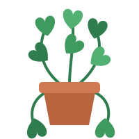
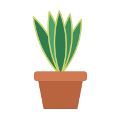
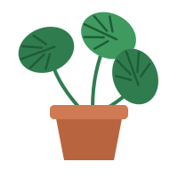
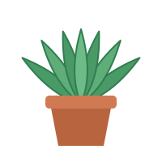
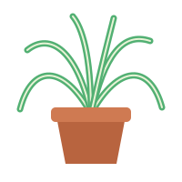
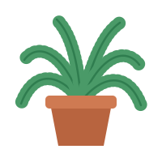

Pothos
Epipremnum aureum
- Light
- Low to bright indirect
- Water
- Every 1 to 2 weeks, when the top inch of soil is dry
- Difficulty
- Easy
A trailing vine that forgives missed waterings and grows in almost any room.
Toxic to petsFilter by name, by the light available, or show only plants that are safe for pets.
Showing 6 plants

Epipremnum aureum
A trailing vine that forgives missed waterings and grows in almost any room.
Toxic to pets
Dracaena trifasciata
Upright, sculptural leaves that tolerate dim corners and long gaps between drinks.
Toxic to pets
Monstera deliciosa
Large, glossy leaves that develop their splits as the plant matures.
Toxic to pets
Aloe vera
A succulent that stores water in its thick leaves and prefers a sunny windowsill.
Toxic to pets
Chlorophytum comosum
Arching, striped leaves and baby plantlets that are easy to share.
Pet-safe
Nephrolepis exaltata
Feathery fronds that like humidity, which makes a bathroom a good home.
Pet-safePet-safety notes follow ASPCA listings at the time of writing. Confirm with a veterinarian before bringing a new plant home.